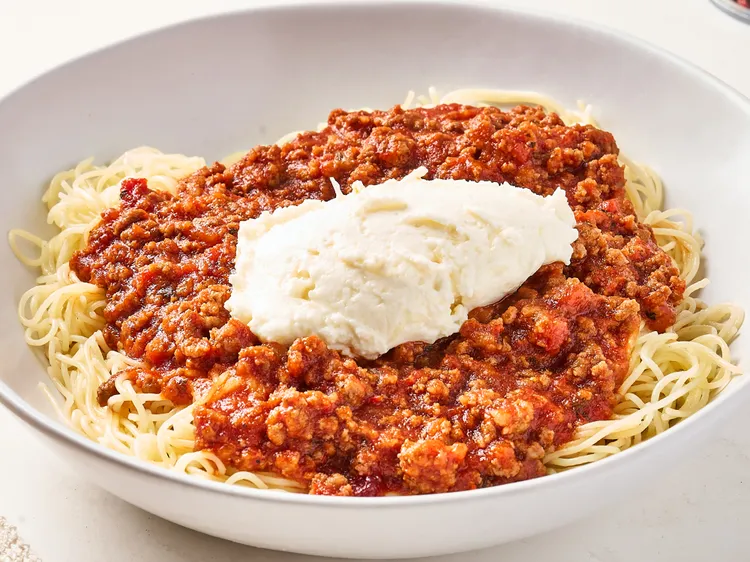

Home
Cranberry Spaghetti

Description
In this cranberry spaghetti, jellied cranberry sauce provides a sweet-tart kick when combined with jarred spaghetti sauce.
Served over angel hair pasta, this recipe will feed a crowd.
Ingridients
- 2 pounds ground chuck
- 1 pound mild country sausage
- 3 (12 ounce) jars mushroom spaghetti sauce.
- 1 (14 ounce) can jellied cranberry sauce
- 2 pounds angel hair pasta
- 1 (15 ounce) container ricotta
- 3 ounces finely shredded Parmesan cheese
Steps
- Cook and stir ground beef and sausage in a large saucepan over medium-high heat, breaking up chunks with a spatula, until browned and crumbly, about 7 minutes.
Strain the grease and return meat to the pot.
- Add 3 jars spaghetti sauce to the pot and bring to a simmer.
- In a small bowl, mash cranberry sauce with a fork and add to meat sauce. Continue cooking for 10 minutes.
- Bring a large pot of lightly salted water to a boil.
Cook angel hair pasta in the boiling water, stirring occasionally, until tender yet firm to the bite, 4 to 5 minutes.
Drain and set aside to keep warm.
- Combine ricotta and Parmesan cheese in a small bowl and set aside.
- Serve meat sauce over angel hair pasta and top with a dollop of ricotta mixture. Serve immediately.